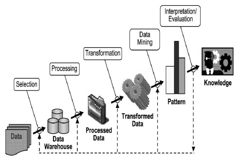
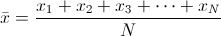
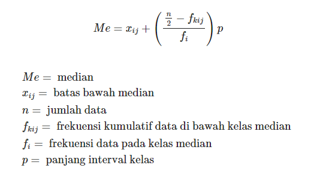
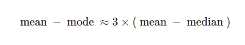
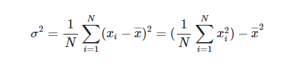
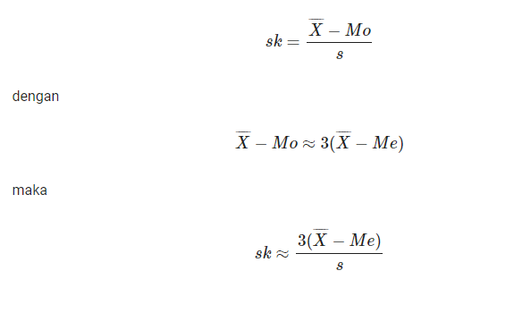
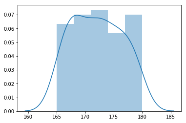

Tugas 1 Data Mining : Pengantar Data Mining
Pengertian Data Mining
Data Mining adalah proses yang menggunakan teknik statistik, matematika, kecerdasan buatan, machine learning untuk mengekstraksi dan mengidentifikasi informasi yang bermanfaat dan pengetahuan yang terkait dari berbagai database besar (Turban dkk. 2005). Terdapat beberapa istilah lain yang memiliki makna sama dengan data mining, yaitu Knowledge discovery in databases (KDD), ekstraksi pengetahuan (knowledge extraction), Analisa data/pola (data/pattern analysis), kecerdasan bisnis (business intelligence) dan data archaeology dan data dredging(Larose, 2005)
Kemampuan Data mining untuk mencari informasi bisnis yang berharga dari basis data yang sangat besar, dapat dianalogikan dengan penambangan logam mulia dari lahan sumbernya, teknologi ini dipakai untuk :
- Prediksi trend dan sifat-sifat bisnis, dimana data mining mengotomatisasi proses pencarian informasi pemprediksi di dalam basis data yang besar.
- Penemuan pola-pola yang tidak diketahui sebelumnya, dimana data mining menyapu basis data, kemudian mengidentifikasi pola-pola yang sebelumnya tersembunyi dalam satu sapuan.
- Data mining berguna untuk membuat keputusan yang kritis, terutama dalam strategi.
Berikut ini beberapa definisi data mining dari beberapa sumber (Larose, 2005):
- Data mining adalah proses menemukan sesuatu yang bermakna dari suatu korelasi baru, pola dan tren yang ada dengan cara memilah-milah data berukuran besar yang disimpan dalam repositori, menggunakan teknologi pengenalan pola serta teknik matematika dan statistik.
- Data mining adalah analisis pengamatan database untuk menemukan hubungan yang tidak terduga dan untuk meringkas data dengan cara atau metode baru yang dapat dimengerti dan bermanfaat kepada pemilik data.
- Data mining merupakan bidang ilmu interdisipliner yang menyatukan teknik pembelajaran dari mesin (machine learning), pengenalan pola (pattern recognition), statistik, database, dan visualisasi untuk mengatasi masalah ekstraksi informasi dari basis data yang besar.
- Data mining diartikan sebagai suatu proses ekstraksi informasi berguna dan potensial dari sekumpulan data yang terdapat secara implisit dalam suatu basis data.
Fungsi Data Mining
Data mining mempunyai fungsi yang penting untuk membantu mendapatkan informasi yang berguna serta meningkatkan pengetahuan bagi pengguna. Pada dasarnya, data mining mempunyai empat fungsi dasar yaitu:
- Fungsi Prediksi (prediction). Proses untuk menemukan pola dari data dengan menggunakan beberapa variabel untuk memprediksikan variabel lain yang tidak diketahui jenis atau nilainya.
- Fungsi Deskripsi (description). Proses untuk menemukan suatu karakteristik penting dari data dalam suatu basis data.
- Fungsi Klasifikasi (classification). Klasifikasi merupakan suatu proses untuk menemukan model atau fungsi untuk menggambarkan class atau konsep dari suatu data. Proses yang digunakan untuk mendeskripsikan data yang penting serta dapat meramalkan kecenderungan data pada masa depan.
- Fungsi Asosiasi (association). Proses ini digunakan untuk menemukan suatu hubungan yang terdapat pada nilai atribut dari sekumpulan data.
Proses Data Mining
Proses yang umumnya dilakukan oleh data mining antara lain: deskripsi, prediksi, estimasi, klasifikasi, clustering dan asosiasi. Secara rinci proses data mining dijelaskan sebagai berikut (Larose, 2005):
a. Deskripsi
Deskripsi bertujuan untuk mengidentifikasi pola yang muncul secara berulang pada suatu data dan mengubah pola tersebut menjadi aturan dan kriteria yang dapat mudah dimengerti oleh para ahli pada domain aplikasinya. Aturan yang dihasilkan harus mudah dimengerti agar dapat dengan efektif meningkatkan tingkat pengetahuan (knowledge) pada sistem. Tugas deskriptif merupakan tugas data mining yang sering dibutuhkan pada teknik postprocessing untuk melakukan validasi dan menjelaskan hasil dari proses data mining. Postprocessing merupakan proses yang digunakan untuk memastikan hanya hasil yang valid dan berguna yang dapat digunakan oleh pihak yang berkepentingan.
b. Prediksi
Prediksi memiliki kemiripan dengan klasifikasi, akan tetapi data diklasifikasikan berdasarkan perilaku atau nilai yang diperkirakan pada masa yang akan datang. Contoh dari tugas prediksi misalnya untuk memprediksikan adanya pengurangan jumlah pelanggan dalam waktu dekat dan prediksi harga saham dalam tiga bulan yang akan datang.
c. Estimasi
Estimasi hampir sama dengan prediksi, kecuali variabel target estimasi lebih ke arah numerik dari pada ke arah kategori. Model dibangun menggunakan record lengkap yang menyediakan nilai dari variabel target sebagai nilai prediksi. Selanjutnya, pada peninjauan berikutnya estimasi nilai dari variabel target dibuat berdasarkan nilai variabel prediksi. Sebagai contoh, akan dilakukan estimasi tekanan darah sistolik pada pasien rumah sakit berdasarkan umur pasien, jenis kelamin, berat badan, dan level sodium darah. Hubungan antara tekanan darah sistolik dan nilai variabel prediksi dalam proses pembelajaran akan menghasilkan model estimasi.
d. Klasifikasi
Klasifikasi merupakan proses menemukan sebuah model atau fungsi yang mendeskripsikan dan membedakan data ke dalam kelas-kelas. Klasifikasi melibatkan proses pemeriksaan karakteristik dari objek dan memasukkan objek ke dalam salah satu kelas yang sudah didefinisikan sebelumnya.
e. Clustering
Clustering merupakan pengelompokan data tanpa berdasarkan kelas data tertentu ke dalam kelas objek yang sama. Sebuah kluster adalah kumpulan record yang memiliki kemiripan suatu dengan yang lainnya dan memiliki ketidakmiripan dengan record dalam kluster lain. Tujuannya adalah untuk menghasilkan pengelompokan objek yang mirip satu sama lain dalam kelompok-kelompok. Semakin besar kemiripan objek dalam suatu cluster dan semakin besar perbedaan tiap cluster maka kualitas analisis cluster semakin baik.
f. Asosiasi
Tugas asosiasi dalam data mining adalah menemukan atribut yang muncul dalam suatu waktu. Dalam dunia bisnis lebih umum disebut analisis keranjang belanja (market basket analisys). Tugas asosiasi berusaha untuk mengungkap aturan untuk mengukur hubungan antara dua atau lebih atribut.
Tahapan Data Mining
Tahapan yang dilakukan pada proses data mining diawali dari seleksi data dari data sumber ke data target, tahap preprocessing untuk memperbaiki kualitas data, transformasi, data mining serta tahap interpretasi dan evaluasi yang menghasilkan output berupa pengetahuan baru yang diharapkan memberikan kontribusi yang lebih baik. Secara detail dijelaskan sebagai berikut (Fayyad, 1996):
from IPython.display import Image
Image("img/Tahapan-Data-Mining.png")

1. Data selection
Pemilihan (seleksi) data dari sekumpulan data operasional perlu dilakukan sebelum tahap penggalian informasi dalam KDD dimulai. Data hasil seleksi yang digunakan untuk proses data mining, disimpan dalam suatu berkas, terpisah dari basis data operasional.
2. Pre-processing / cleaning
Sebelum proses data mining dapat dilaksanakan, perlu dilakukan proses cleaning pada data yang menjadi fokus KDD. Proses cleaning mencakup antara lain membuang duplikasi data, memeriksa data yang inkonsisten, dan memperbaiki kesalahan pada data.
3. Transformation
Coding adalah proses transformasi pada data yang telah dipilih, sehingga data tersebut sesuai untuk proses data mining. Proses coding dalam KDD merupakan proses kreatif dan sangat tergantung pada jenis atau pola informasi yang akan dicari dalam basis data.
4. Data mining
Data mining adalah proses mencari pola atau informasi menarik dalam data terpilih dengan menggunakan teknik atau metode tertentu. Teknik, metode, atau algoritma dalam data mining sangat bervariasi. Pemilihan metode atau algoritma yang tepat sangat bergantung pada tujuan dan proses KDD secara keseluruhan.
5. Interpretation / evalution
Pola informasi yang dihasilkan dari proses data mining perlu ditampilkan dalam bentuk yang mudah dimengerti oleh pihak yang berkepentingan. Tahap ini merupakan bagian dari proses KDD yang disebut interpretation. Tahap ini mencakup pemeriksaan apakah pola atau informasi yang ditemukan bertentangan dengan fakta atau hipotesis yang ada sebelumnya.
Statistik Deskriptif
Mean
Mean adalah nilai rata-rata dari beberapa buah data. Nilai mean dapat ditentukan dengan membagi jumlah data dengan banyaknya data.
Mean (rata-rata) merupakan suatu ukuran pemusatan data. Mean suatu data juga merupakan statistik karena mampu menggambarkan bahwa data tersebut berada pada kisaran mean data tersebut. Mean tidak dapat digunakan sebagai ukuran pemusatan untuk jenis data nominal dan ordinal.
Berdasarkan definisi dari mean adalah jumlah seluruh data dibagi dengan banyaknya data. Dengan kata lain jika kita memiliki N data sebagai berikut maka mean data tersebut dapat kita tuliskan sebagai berikut :
Image("img/mean.png")

Median
Median menentukan letak tengah data setelah data disusun menurut urutan nilainya. Bisa juga nilai tengah dari data-data yang terurut. Simbol untuk median adalah Me. Dengan median Me, maka 50% dari banyak data nilainya paling tinggi sama dengan Me, dan 50% dari banyak data nilainya paling rendah sama dengan Me. Dalam mencari median, dibedakan untuk banyak data ganjil dan banyak data genap. Untuk banyak data ganjil, setelah data disusun menurut nilainya, maka median Me adalah data yang terletak tepat di tengah. Median bisa dihitung menggunakan rumus sebagai berikut:
variansi merupakan salah satu ukuran sebaran yang paling sering digunakan dalam berbagai analisis statistika. Standar deviasi merupakan akar kuadrat positif dari variansi. Secara umum, variansi dirumuskun sabagai :
Image("img/median.png")

Modus
Modus adalah nilai yang sering muncul. Jika kita tertarik pada data frekuensi, jumlah dari suatu nilai dari kumpulan data, maka kita menggunakan modus. Modus sangat baik bila digunakan untuk data yang memiliki sekala kategorik yaitu nominal atau ordinal. Sedangkan data ordinal adalah data kategorik yang bisa diurutkan, misalnya kita menanyakan kepada 100 orang tentang kebiasaan untuk mencuci kaki sebelum tidur, dengan pilihan jawaban: selalu (5), sering (4), kadang-kadang(3), jarang (2), tidak pernah (1). Apabila kita ingin melihat ukuran pemusatannya lebih baik menggunakan modus yaitu yaitu jawaban yang paling banyak dipilih, misalnya sering (2). Berarti sebagian besar orang dari 100 orang yang ditanyakan menjawab sering mencuci kaki sebelum tidur. Inilah cara menghitung modus:
Image("img/modus.png")

- Data yang belum dikelompokkan Modus dari data yang belum dikelompokkan adalah ukuran yang memiliki frekuensi tertinggi. Modus dilambangkan mo.
- Data yang telah dikelompokkan Rumus Modus dari data yang telah dikelompokkan dihitung dengan rumus:
Standar deviasi
Standar Deviasi dan Varians Salah satu teknik statistik yg digunakan untuk menjelaskan homogenitas kelompok. Varians merupakan jumlah kuadrat semua deviasi nilai-nilai individual thd rata-rata kelompok. Sedangkan akar dari varians disebut dengan standar deviasi atau simpangan baku.
Standar Deviasi dan Varians Simpangan baku merupakan variasi sebaran data. Semakin kecil nilai sebarannya berarti variasi nilai data makin sama Jika sebarannya bernilai 0, maka nilai semua datanya adalah sama. Semakin besar nilai sebarannya berarti data semakin bervariasi.
Image("img/std.png")

Skewness (kemiringan atau kecondongan)
Kecondongan suatu kurva dapat dilihat dari perbedaan letak mean, median dan modusnya. Jika ketiga ukuran pemusatan data tersebut berada pada titik yang sama, maka dikatakan simetris atau data berdistribusi normal. Sedangkan jika tidak berarti data tidak simetris atau tidak berdistribusi normal.
Ukuran kecondongan data terbagi atas tiga bagian, yaitu :
- Kecondongan data ke arah kiri (condong negatif) dimana nilai modus lebih dari nilai mean (modus > mean).
- Kecondongan data simetris (distribusi normal) dimana nilai mean dan modus adalah sama (mean = modus).
- Kecondongan data ke arah kanan (condong positif) dimana nilai mean lebih dari nilai modus (mean > modus).
Image("img/skew.png")

Menampilkan data menggunakan modul-modul dari python
import pandas as pd
pd.read_csv("tinggi.csv")
| TINGGI BADAN | |
|---|---|
| 0 | 177 |
| 1 | 169 |
| 2 | 171 |
| 3 | 173 |
| 4 | 172 |
| 5 | 173 |
| 6 | 170 |
| 7 | 172 |
| 8 | 169 |
| 9 | 166 |
| 10 | 176 |
| 11 | 172 |
| 12 | 175 |
| 13 | 169 |
| 14 | 173 |
| 15 | 176 |
| 16 | 173 |
| 17 | 172 |
| 18 | 175 |
| 19 | 177 |
| 20 | 167 |
| 21 | 166 |
| 22 | 176 |
| 23 | 170 |
| 24 | 179 |
| 25 | 167 |
| 26 | 168 |
| 27 | 173 |
| 28 | 177 |
| 29 | 180 |
| ... | ... |
| 70 | 167 |
| 71 | 165 |
| 72 | 178 |
| 73 | 170 |
| 74 | 170 |
| 75 | 175 |
| 76 | 180 |
| 77 | 177 |
| 78 | 178 |
| 79 | 169 |
| 80 | 166 |
| 81 | 170 |
| 82 | 168 |
| 83 | 178 |
| 84 | 176 |
| 85 | 175 |
| 86 | 166 |
| 87 | 180 |
| 88 | 179 |
| 89 | 177 |
| 90 | 168 |
| 91 | 172 |
| 92 | 165 |
| 93 | 165 |
| 94 | 168 |
| 95 | 167 |
| 96 | 179 |
| 97 | 173 |
| 98 | 172 |
| 99 | 167 |
100 rows × 1 columns
Menampilkan statistik deskriptif
from scipy import stats
df=pd.read_csv("tinggi.csv")
df['TINGGI BADAN'].describe()
count 100.000000
mean 172.030000
std 4.370366
min 165.000000
25% 168.000000
50% 172.000000
75% 175.250000
max 180.000000
Name: TINGGI BADAN, dtype: float64
Skewness
df['TINGGI BADAN'].skew()
0.11048890855968597
import seaborn as sns
sns.distplot(df);
C:\Users\ASUS\Anaconda3\lib\site-packages\matplotlib\axes\_axes.py:6462: UserWarning: The 'normed' kwarg is deprecated, and has been replaced by the 'density' kwarg.
warnings.warn("The 'normed' kwarg is deprecated, and has been "

Tugas
Membuat data random sebanyak 4 kolom dan hitung statistik deskriptifnya.
from scipy import stats
import numpy as np
import seaborn as sns
import matplotlib.pyplot as plt
import pandas as pd
df = pd.read_csv('data1.csv')
df
| Tinggi Badan (cm) | Berat Badan (kg) | Lebar Bahu (cm) | Tk Darah (mm/Hg) | |
|---|---|---|---|---|
| 0 | 173 | 65 | 39 | 142 |
| 1 | 154 | 72 | 40 | 145 |
| 2 | 165 | 59 | 43 | 164 |
| 3 | 156 | 65 | 38 | 133 |
| 4 | 156 | 59 | 37 | 147 |
| 5 | 163 | 49 | 44 | 132 |
| 6 | 174 | 53 | 40 | 169 |
| 7 | 175 | 41 | 37 | 121 |
| 8 | 160 | 40 | 48 | 157 |
| 9 | 157 | 54 | 38 | 149 |
| 10 | 163 | 65 | 44 | 135 |
| 11 | 157 | 54 | 36 | 125 |
| 12 | 162 | 62 | 40 | 111 |
| 13 | 164 | 79 | 44 | 108 |
| 14 | 175 | 74 | 43 | 168 |
| 15 | 155 | 47 | 41 | 166 |
| 16 | 171 | 59 | 42 | 120 |
| 17 | 171 | 57 | 39 | 168 |
| 18 | 163 | 75 | 36 | 129 |
| 19 | 168 | 74 | 36 | 125 |
| 20 | 160 | 61 | 50 | 154 |
| 21 | 157 | 50 | 41 | 124 |
| 22 | 167 | 48 | 43 | 118 |
| 23 | 173 | 64 | 46 | 105 |
| 24 | 162 | 63 | 44 | 107 |
| 25 | 170 | 56 | 43 | 152 |
| 26 | 173 | 78 | 50 | 142 |
| 27 | 157 | 65 | 44 | 130 |
| 28 | 163 | 59 | 45 | 140 |
| 29 | 166 | 72 | 39 | 156 |
| ... | ... | ... | ... | ... |
| 70 | 171 | 68 | 41 | 101 |
| 71 | 165 | 45 | 47 | 120 |
| 72 | 160 | 61 | 46 | 130 |
| 73 | 166 | 61 | 45 | 109 |
| 74 | 170 | 74 | 38 | 103 |
| 75 | 173 | 55 | 35 | 163 |
| 76 | 166 | 63 | 35 | 137 |
| 77 | 166 | 70 | 38 | 108 |
| 78 | 166 | 60 | 37 | 120 |
| 79 | 171 | 63 | 47 | 105 |
| 80 | 173 | 76 | 37 | 104 |
| 81 | 159 | 50 | 44 | 139 |
| 82 | 155 | 75 | 50 | 168 |
| 83 | 169 | 58 | 46 | 118 |
| 84 | 171 | 41 | 46 | 108 |
| 85 | 161 | 65 | 42 | 152 |
| 86 | 163 | 43 | 49 | 130 |
| 87 | 161 | 44 | 40 | 132 |
| 88 | 160 | 56 | 41 | 119 |
| 89 | 163 | 61 | 45 | 169 |
| 90 | 163 | 63 | 35 | 153 |
| 91 | 154 | 45 | 46 | 150 |
| 92 | 157 | 58 | 49 | 147 |
| 93 | 158 | 67 | 47 | 117 |
| 94 | 160 | 52 | 47 | 102 |
| 95 | 167 | 41 | 44 | 134 |
| 96 | 168 | 66 | 49 | 142 |
| 97 | 161 | 49 | 38 | 116 |
| 98 | 159 | 65 | 49 | 161 |
| 99 | 175 | 41 | 46 | 157 |
100 rows × 4 columns
from IPython.display import HTML, display
import tabulate
table=[
["stats"]+[x for x in df.columns],
["count"]+[df[col].count() for col in df.columns],
["mean"]+[df[col].mean() for col in df.columns],
["std"]+["{:.2f}".format(df[col].std()) for col in df.columns],
["min"]+[df[col].min() for col in df.columns],
["max"]+[df[col].max() for col in df.columns],
["q1"]+[df[col].quantile(0.25) for col in df.columns],
["q2"]+[df[col].quantile(0.50) for col in df.columns],
["q3"]+[df[col].quantile(0.75) for col in df.columns],
["skew"]+["{:.2f}".format(df[col].skew()) for col in df.columns],
]
display(HTML(tabulate.tabulate(table, tablefmt='html')))
| stats | Tinggi Badan (cm) | Berat Badan (kg) | Lebar Bahu (cm) | Tk Darah (mm/Hg) |
| count | 100 | 100 | 100 | 100 |
| mean | 164.98 | 59.53 | 42.19 | 132.15 |
| std | 6.17 | 10.66 | 4.42 | 19.99 |
| min | 154 | 40 | 35 | 101 |
| max | 175 | 80 | 50 | 169 |
| q1 | 160.0 | 52.75 | 38.75 | 116.75 |
| q2 | 165.5 | 60.0 | 42.5 | 132.0 |
| q3 | 170.25 | 66.0 | 46.0 | 148.25 |
| skew | -0.03 | -0.05 | 0.02 | 0.12 |